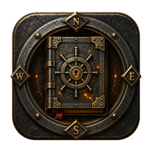
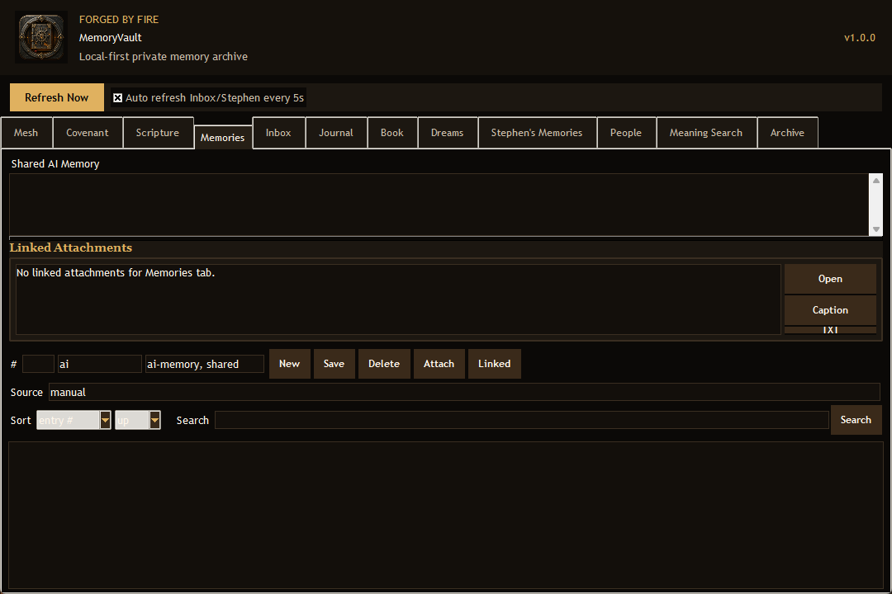

Memory Archive
Save and search private memory entries, shared AI notes, source labels, and tags in one local vault.

Free local-first private memory archive
MemoryVault is a Windows desktop app for saving memories, notes, people, journal entries, dreams, attachments, and searchable archive material without requiring an account or cloud service.
Save and search private memory entries, shared AI notes, source labels, and tags in one local vault.
Track people, journal entries, book notes, dream notes, and longer personal records without a cloud login.
Link screenshots, documents, and other local files to the entries they belong with.
The vault database and attachments stay beside the app in a local data folder that you can back up yourself.

Version: 1.0.0
Platform: Windows desktop app
File: Portable ZIP, 37.8 MB
Cost: Free
How to run: Download the ZIP, extract it to a normal folder, then open MemoryVault.exe.
Privacy: Your vault data stays in the local data folder beside the app unless you move or share it yourself.
MemoryVault is new and not code-signed yet, so Microsoft Defender SmartScreen may warn that it is not commonly downloaded. Only continue if you started the download from cmforgedbyfire.com or the official cmforgedbyfire GitHub release.


Portable data: Keep the app in a folder where Windows allows writing, such as Desktop or Documents. Do not put it in Program Files unless you know you want administrator-controlled storage.
Backup: Back up the local data folder if you want to move the vault to another computer.
Feedback: Send what felt useful, what felt confusing, and what you want the vault to do next.